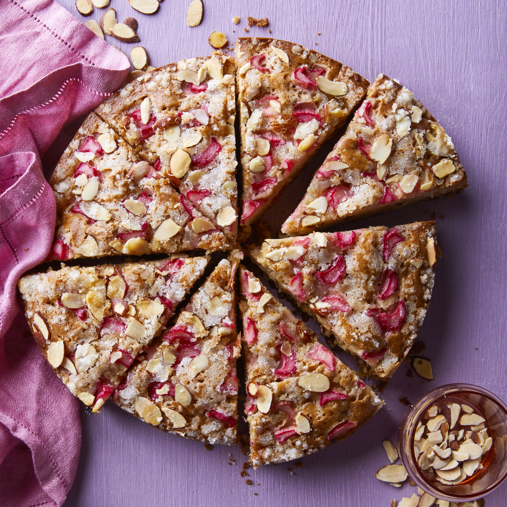

Almond Rhubarb Coffee Cake

Description
This cake is sweet and almondy with rhubarb delectability.
Ingredients
- 1 ½ cups packed brown sugar
- ⅔ cup vegetable oil
- 1 egg
- 1 teaspoon vanilla extract
- 2 ½ cups all-purpose flour
- 1 teaspoon salt
- 1 teaspoon baking soda
- 1 cup milk
- 1 ½ cups rhubarb, chopped
- ½ cup sliced almonds
- ⅓ cup white sugar
- 1 tablespoon butter, melted
- ¼ cup sliced almonds
Steps
- Preheat oven to 350 degrees F (175 degrees C). Grease two 9 inch round pans.
- In a large bowl, beat brown sugar, oil, egg, and vanilla together until smooth. Combine flour, salt and baking soda; add to sugar mixture alternately with milk. Beat until smooth. Stir in rhubarb and 1/2 cup almonds. Pour into prepared pans.
- In a small bowl, combine white sugar and butter or margarine. Stir in 1/4 cup almonds. Sprinkle topping over batter.
- Bake for 30 to 35 minutes, or until the cake tests done.